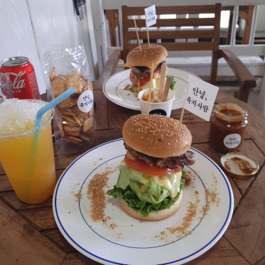
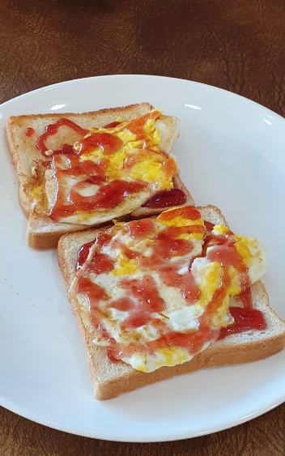
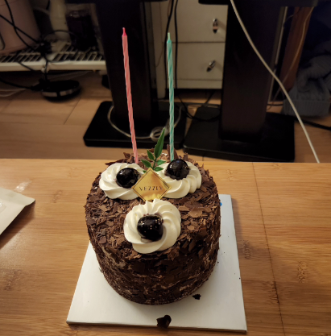

22.08.02
닝우가 나를 가지러 오는 차를 찍었다!
22.08.10

핫케이크를 좋아하는 닝우와 핫케이크를 먹었다!
22.08.14
사실 8월은 싸우느라 사진이 많지가 않다🥲
나는 가족 여행을 다녀왔고, 닝우도 음성에 다녀왔다
22.08.16
누가 이렇게 새침하지? 닝우

우리는 닝우 생일을 기념해서 제주도로 놀러가기로 하고 짐을 쌌다
22.08.17

삐걱삐걱 다투며 공항 도착! 나는 제주도 여행을 아주 기대하고 있었다
닝우 생일에 해주고 싶은 것이 많았기 때문이다

제주도에 도착해 처음으로 먹은 밥!
22.08.18
우리의 첫 숙소! 마당이 참 예뻤다

지금도 그리운 조식
별 게 들어가지도 않으면서 엄청 맛있었다

함덕 언덕에 올라가 꽃과 바다와 사진을 찍었다
날씨가 아주 좋았다!

배를 타고 우도로 들어가는 중

우리 행복해보여요
안녕 육지사람! 햄버거는 그저 그랬지만 기분은 참 좋았다
우도 바다에서도 노는 물개들
22.08.19
필수인 조식이다 우리가 제일 많이 먹었다

물놀이를 할 때면 선크림으로 낙서를 하는 닝우
멋진 함덕 바다에 들어간 멋진 닝우
여기서는 놀지 않고 사진만 찍었지만 참 멋있었다
22.08.20

머라구 닝우 생일이라구여? 생일 축하합니다~ 생일축하합니다~🎁

자기 생일에도 빼먹을 수 없는 조식!

레스토랑을 열심히 찾아 예약해서 닝우를 데려갔다
낯설어 하는 닝우
내가 두 달동안 준비한 결과물! 닝우가 깜짝 놀라고 아주 좋아해줬다
내가 준비한 것들을 좋아해줘서 고마워
우리 사랑해요
이호테우 앞에 있는 숙소였다
여기서 창밖을 바라본 게 정말 좋았다

생일 파티를 하고 바다로 산책을 나갔다
제주도에서 본 닝우는 함박 웃음을 짓고 있을 때가 많았다
네가 행복한 게 내가 행복한 거야😊
닝우도 똑같이 이렇게 말한 적이 있다 우린 마음이 똑같다
생일 축하해 내 자기야
22.08.21
아침 멍을 때리는 자기의 모습
판판포구로 출발했다!
해안가를 따라가다가 막다른 길이 나왔다
닝우는 멋지게 후진을 하며 빠져나왔다
판판포구에 도착했다
꽤 깊어서 발이 닿지 않아 닝닝이가 조금 무서워했다
하지만 적응하고 나니 재밌게 놀았다
방수 케이스가 찢어진 줄도 모르고 재밌었다😆
그리하여 이것은 우리의 마지막 제주도 사진이 된다...
22.08.24

제주도에서 돌아온 지 3일이 지난 오늘
또 어디론가 급하게 떠나는 우리
그렇다... 그곳은 속초!
바다 후유증이 심한 자기가 거의 !무계획!으로 가자고 했다
숙소를 대충 잡고 강원도로 훌쩍 떠났다

바다에 있어서 싱글벙글한 우리
물놀이를 하면 왜 라면이 맛있을까?🤔
신라면이 참으로 달았다
얼마 지나지 않아 추워서 숙소로 돌아갔다!
숙소에 있는 돌돌이에 옷을 맡겼다 최고의 숙소다
마따! 시장에 들려서 먹을 것도 잔뜩 샀다
저기 있는 회는 자기가 나를 위해 찾아본 집에서 사온 것이다
내가 회를 좋아해서 열심히 찾아봤다고 한다
진짜 맛있었고 진짜 고마웠다!
동해 소주를 좋아하는 자기가 집중해서 음식을 먹는다
22.08.25
이 멋진 곳은 어디?
바로 우리가 어제 놀던 곳이다
마지막 물놀이가 너무나도 아쉬운 나머지
여름 막바지에 아침 물놀이를 시도한다
닝우가 추위에 몸을 웅크리며 걷고 있다
그러나 우리는 들어가면 어떻게든 논다고 확신했다
물론 그 확신은 정확했다
후다닥 씻고 시장에 가서 엄청나 막걸리빵을 샀다
줄이 엄청나지만 맛도 엄청나다!
자기가 좋아하는 새우아저씨네 새우튀김도 먹었다
진짜진짜 올해 물놀이 끝!
미련을 털어버리고 서울로 향했다
그런데 하늘이...? 범상치가 않다...
멋진 하늘을 용서할 수 없어 다시 해수욕장으로 돌아왔다
해가 질수록 하늘이 점점 더 멋져졌다!
자동차에 비친 노을 조차 멋졌다
우리는 신이 나서 속초 해수욕장으로 달려갔다
엄청나 여행이라며 우리는 사진을 찍었다
자기가 꼭 라라랜드 같다고 헀다
정말 영화 속에 들어와 있는 것만 같은 기분이었다
자기와 함께 있을 때면 자꾸 영화 같은 일이 벌어진다
22.08.26
바쁘게 놀다보니 200일이 되었다!
내가 좋아하는 초코 케이크를 먹으며 축하를 했다🎉
22.08.27
햇볕이 엄청나게 좋은 201일
들뜬 나는 매트리스를 밀어버렸다
짱구 빨대가 만족스러운 닝닝이다
평상 놀이를 하고 저녁으로 라면을 먹었다
라면의 생김새를 보아하니 아직 틈새라면에 빠지기 전으로 추측된다
눈사람도 먹어버렸다!
22.08.28
이 무렵 나는 택배 알바를 하고 있었다
먼지와 땀을 잔뜩 묻히고 건장하게 서서 자기의 주차를 기다린다
자기가 시간이 맞는 날 나를 가지러 와줘서 참 고마웠다
열심히 일하고 일찍 끝나면 자기를 금방 볼 수 있었다!
22.08.29
익숙함에 속을 수도 있지만 이곳은 우리 집이 아니다
한참 이사갈 집을 찾다 1.5룸에 괜찮은 집이 있었다
이사로 한 달을 씨름하던 우리는 드디어 행선지를 결정했다😊
22.08.30
청광도 이제 안녕이구나
바닥에 누워 기념 셀카를 남긴다
내가 꽤 부치처럼 나왔다